|
RF Component - Antenna Home : www.sharetechnote.com |
|
|
Topics on this page are
As you know, Antenna is a device which convert Electrical Engergy (Electrical Signal) into Electromagnetic Wave which is transmitted into space.
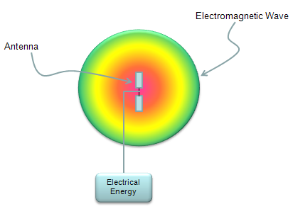
There are various types of antenna out there, some of the examples are shown below. These are only some examples and there are a lot of other types as well. Just check how many of these you are familiar with.
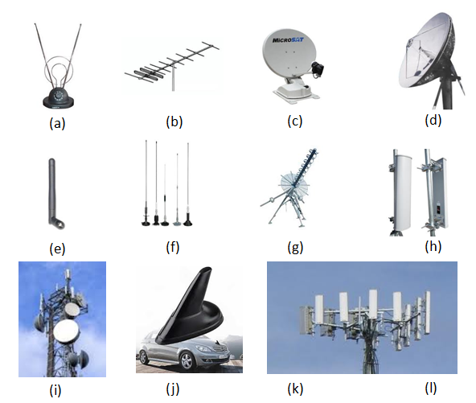
Now in most of mobile communication devices, antenna are embedded in a small space. In a relatively older type of mobile phone, you might have seen the antenna shown at the left side of the picture (whip antenna). In most of the mobile devices you see these days, the antenna is embedded within the case or right on the PCB as shown below. As a mobile device (e.g, smart phone) gets more and more technologies (e.g, cellular technology with various band/radio access technology, bluetooth, WiFi etc) within a device, it is getting tougher and tougher to design multiple antenna and put them into a smal space).
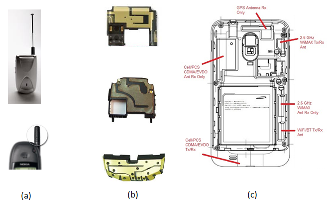
How to represent Antenna Performance ?
There are two major criteria to evaluate Antenna Performance as follows. i) I should convert Electrical Engergy into Electromagnetic Energy with as little loss as possible. ii) I should be able to transmit the converted electromatic engergy as much as possible only to the direction that I want.
There are several indicators to represent the performance of an antenna as follows.
The first step to understand/evaluate the performance of an antenna is to check the radiation pattern of the antenna. Electrical energy flows through a predefined path in most case built in a copper cable or copper trace on PCB, but once the energy is converted into electromagnetic wave, it propagate into the air almost in every direction. Depending on how we design the antenna, the direction in the air in which electromagnetic wave propagate varies. In some direction, the antenna transmit very strong energy and in some direction it transmit small amount of energy and in some direction it transmit the medium range of energy etc. This kind of engergy transmission pattern is called 'Radiation Pattern'. (For more practical example of Radiation Pattern, refer to http://rcexplorer.se/Educational/gain/gain.html )
Following is only some example of possible radiation pattern. In reality, you can think about almost infinite number of different pattern. The goal of antenna design is to make it so that it transmit the energy in the pattern that I want without any energy loss during the conversion from electrical energy to electromagnetic engergy.
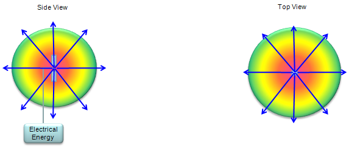
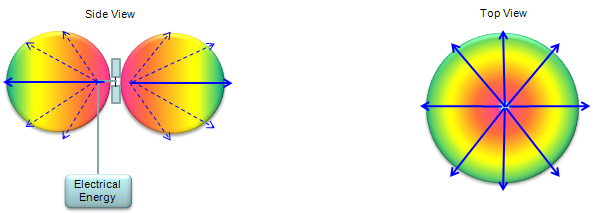
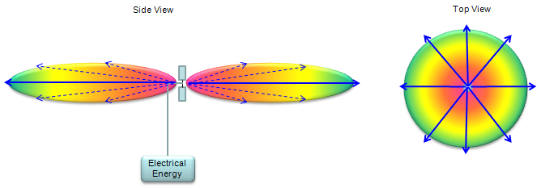
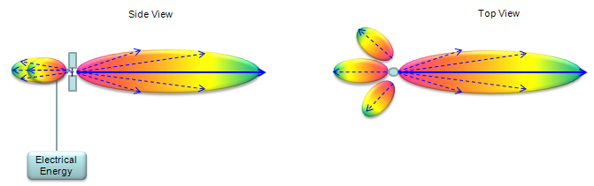
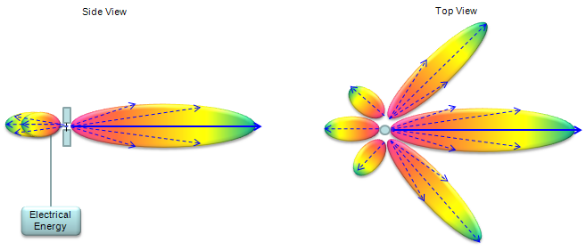
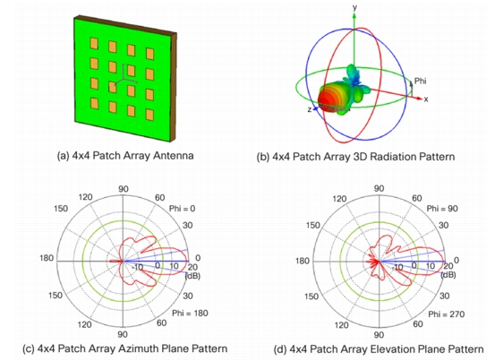
Personally I think the 'Antenna Gain' is a misleading term because i) When we hear the term 'Gain', we usually think 'this device would amplify a signal to make it bigger energy'. But this is not true for Antenna. Most of Antenna is 'passive device' which does not amplify anything. ii) When we think about Gain, the higher the gain is, the higher the total amount of energy coming out of the device is. But this may not be the true in Antenna case. Higher gain in Antenna may mean "Higher engergy transmitted in a certain direction', but it may not mean 'Total amount of energy coming out of the device'. The definition of Antenna gain is the ratio of power transmitted in a certain direction to a certain reference point. This is usually expressed in dB, dBi or dBd. This is indicator to represent 'how well/efficiently the antenna transmit the energy in a specified direction'. Basic concept can be illustrated as follows. (For additional explanation, refer to http://rcexplorer.se/Educational/gain/gain.html )
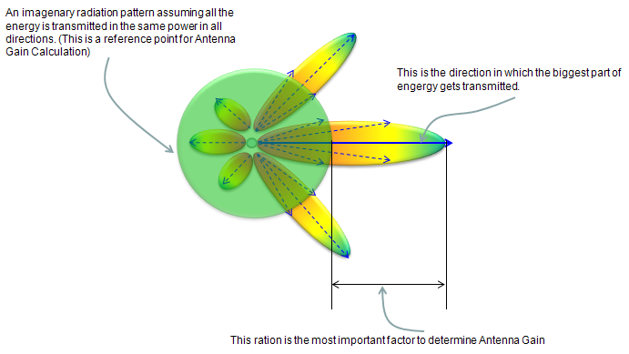
Following is a rule of thumb propagation pattern for typical Gain values. As you see, as Antenna gain increases the direction of propagation gets more and more focused, it does not mean that the total transmission energy (the area surrounded by the ovals) gets higher.
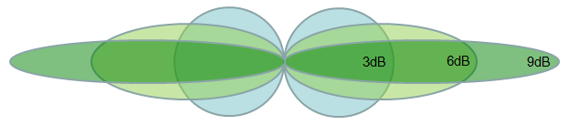
If you want to know the methmatical definition for Gain, here you go.
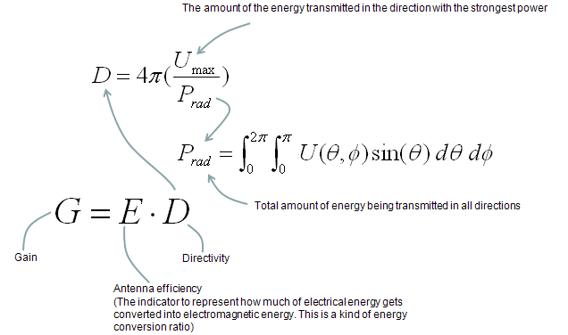
In most case, Antenna Gain is expressed in logarithmic unit as follows.
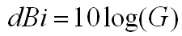
It means as the term implies. It is 'sum of radiated power measured from all directions'. Simple definition of TRP can be illustrated as follows(Note : The sphere shown here is not the radiation pattern of the antenna. It is a 3 dimensional coordinate which is called 'spherical coordinate). I hope this is intuitive enough for you to get the idea without any further description.
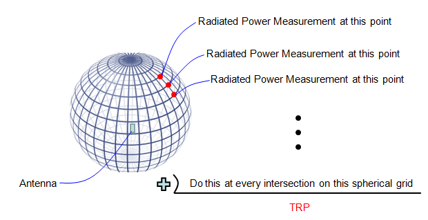
There are two types of TRP, passive TRP and Active TRP. This classification comes from the different ways of measuring TRP. Actually it is related more to how to transmit the signal through the antenna.
In passive TRP, usually the DUT is the isolated antenna and the signal is fed directly to the antenna via the output port of a Network Analyzer (or output port of a signal generator) and measures the transmitted power through the input port of Network analyzer or input port of Spectrum Analyzer.
In active TRP, usually the DUT is the whole device including the antenna. For example, if it is for a mobile phone antenna measurement, we use the whole mobile phone as a DUT. The main purpose of Active TRP measurement is to see the performance of Antenna in real environment. In this case, you cannot use network analyzer or signal generator to transmit the signal through antenna. You have to use what most of people in this area calls a 'call box' which is basically a network simulator (e.g, eNodeB, NodeB, BTS simulator). We send the UE (e.g, mobile phone) a command 'send a signal with power XX dBm or max power' and measure the transmitted power using the 'call box' or 'spectrum analyzer'.
For further reference of TRP. Refer to http://www.antenna-theory.com/definitions/trp.php
TIS(Total Isotropic Sensitivity)
First you may ask "What does 'Isotropic'mean ?" If you look into a dictionary or google it, you would find a definition like "Identical in all direction". TIS means "Sensitivity at every direction based on assumption that the antenna is Isotropic(radiate/receive in the same strength in all direction)". In reality, there is no such an antenna that is purely isotropic. More practical meaning of TIS can be illustrated as below(Note : The sphere shown here is not the radiation pattern of the antenna. It is a 3 dimensional coordinate which is called 'spherical coordinate). As you see, you measure the sensitivity at every point at the intersection of a spherical grid. you wille have the different measurement result at all of those points in reality. If you take the average of those measured value, you will get a single value which indicate the TIS
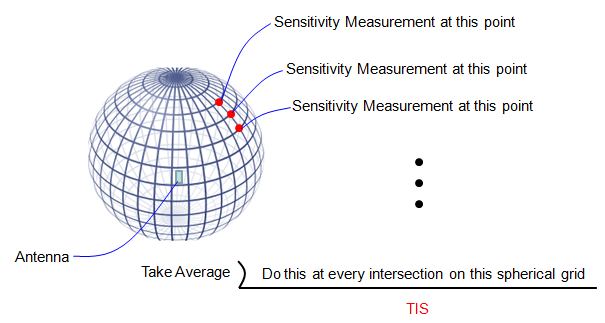
For further reference of TIS. Refer to http://www.antenna-theory.com/definitions/tis.php
(As of Apr, 2013) I think Automatic tunning of Antenna Matching circuit is becoming a hot topic especially in mobile phone industry and think it will be a pretty common technology in near future. If you google the keywords like "Automatic Antenna Tuner","Dynamic Antenna Tuning" etc, you will find various articles, papers and patents about various tuning technology.
Basic Idea on this technology is pretty simple. (It does not tune th antennna itself, it tunes the matching circuit of the antenna).
For example, let's suppose that we have a simple Pi network type of matching circuit as shown below. (In real implementation, the matching circuit would be more complex.. but I wanted to use the simplest structure for easy understanding).
In conventional implementation, you would build as shown below. Build a circuit as follows, keep changing the values for each component until you get the best transmission of the antenna. You may find the proper values in a couple of hours if you are lucky. If you are in bad luck, you would have to spent several day-and-nights to find the proper value. If the target frequency of the antenna changes, you would have to repeat this process. and the predefined value may not always work best for all the individual antenna mass produced in the factory.
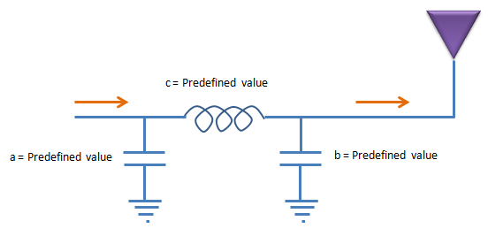
To solve the problems mentioned above, they came out with the concept of automatic (dynamic) tuning of the matching circuit. The baisc idea is as follows. Let's assume that we built a matching circuit with variable Inductors and variable capacitors. These variable components should not be one of those variable component you can purchase from local radio shack and set the value by rotating a knob by hand. They all should be set in electronic control to make this circuit work without human intervention. Now the tricky thing would be to find (or develope) the variable inductor and capacitors. And these variable device should operate with minimum energy (voltage, current) consumption. Currently, it would be a little bit easier to find variable capacitors than variable inductors.
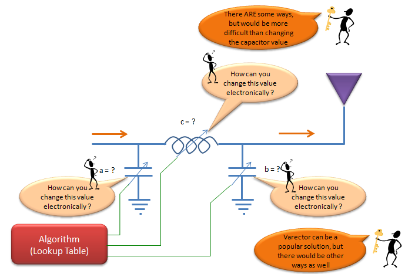
Mainly due to availability of components and some other reasons, in most auto tuning circuit we use variable capacitors as shown below. Once you build a circuit, you may have to find proper values for these components for various situations and store those values in a lookup table and the control reflash the values from the lookup table according to the situation. In this case, how to construct the proper look up table for each situation would be a critical issue.
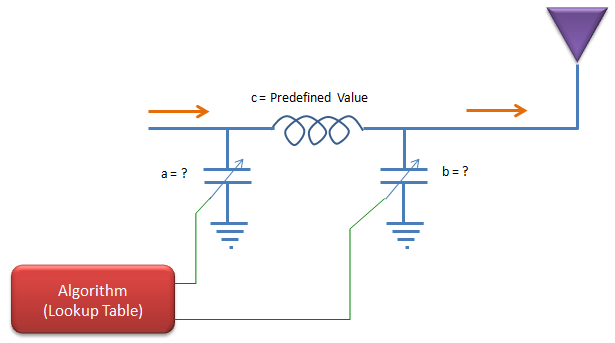
So far so good ? May be, or may be not.
One of the problems for the technique described above would be that you cannot guarantee the predefined look up table would work for all the possible situations. The situation may change in a little bit different way than expected and the look up table cannot do any good job. One of the common solution for this kind of situation would be to apply a value and check the result and feedback the result to the tuning algorithm so that the algorithm can do more tunings. This approach (closed loop approach) can be illustrated as shown below.
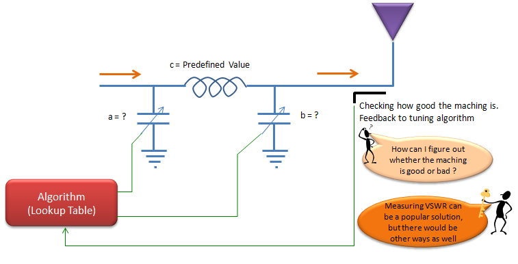
|